FluxCD - Démonstration par l'exemple
Abstract
Sur un cluster Kind fraîchement installé, nous installerons FluxCD (ie. 'bootstrap') pour gérer le déploiement et la mise à jour de 2 applications très simples, que nous exposerons par la suite avec le contrôleur Nginx du cluster. Nous mettrons également en place des notifications pour nous alerter via la messagerie instantanée Discord des évolutions apportées à nos applications.
graph TD
A(users)
B(("ingress\n'foobar'"))
C{service\n'foo'}
D{service\n'bar'}
E[deployment\n'foo']
F[deployment\n'bar']
A -.-> B
B --> C & D
subgraph application 'foo'
C --> E
end
subgraph application 'bar'
D --> F
endEn réalité, ces deux applications sont strictement les mêmes, puisqu'elles consistent chacune en 1 pod faisant usage de la même image 'e2e-test-images/agnhost', mais nous considérerons qu'il s'agit bel et bien de 2 applications distinctes différentes.
Pré-requis
Préparation de notre environnement de travail en local
Nous avons déjà suivi les howtos suivant pour préparer notre environnement de travail sur notre laptop avec les CLIs et un cluster Kins opérationnel :
| howto | Link |
|---|---|
| Command Line Tools | https://papafrancky.github.io/000_setup/Command_line_tools/ |
| Kubernetes en local | https://papafrancky.github.io/000_setup/Kubernetes_en_local/ |
Création des dépôts GitHub
Commençons par nous identifier sur GitHub et créons deux nouveaux dépôts privés :
| Dépôt | Usage |
|---|---|
| k8s-kind-fluxcd | dépôt GitHub dédié à FluxCD sur notre cluster |
| k8s-kind-apps | dépôt GitHub dédié à l'hébergement des applications à déployer via FluxCD |
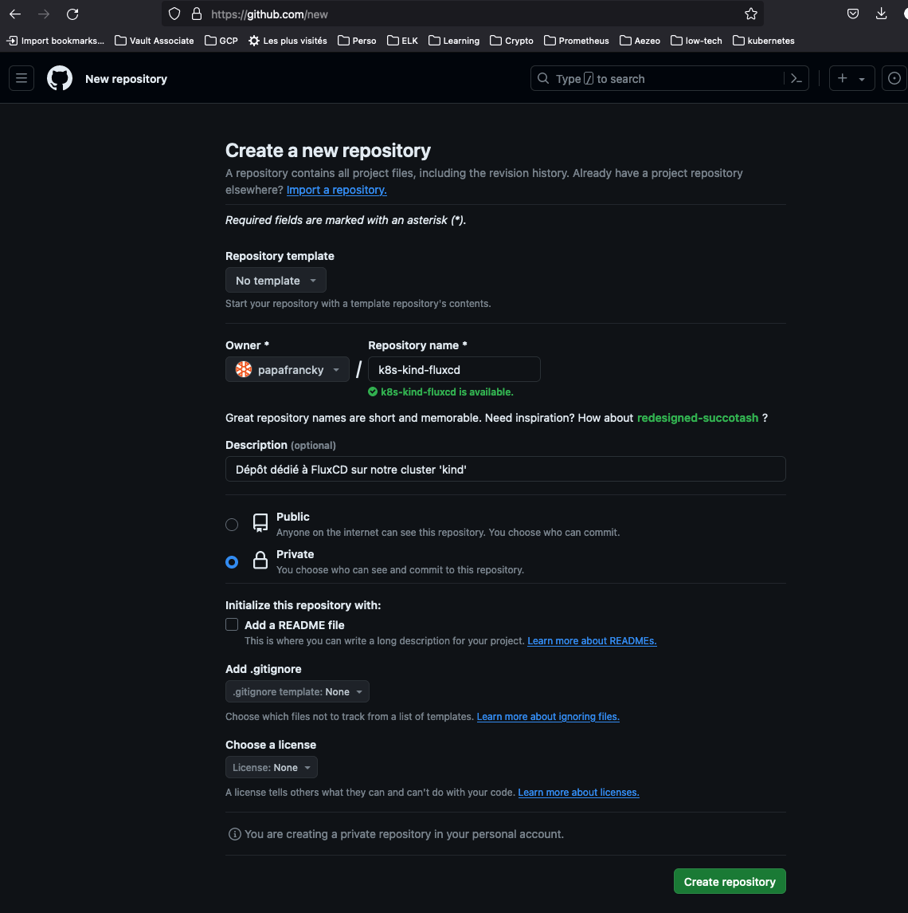
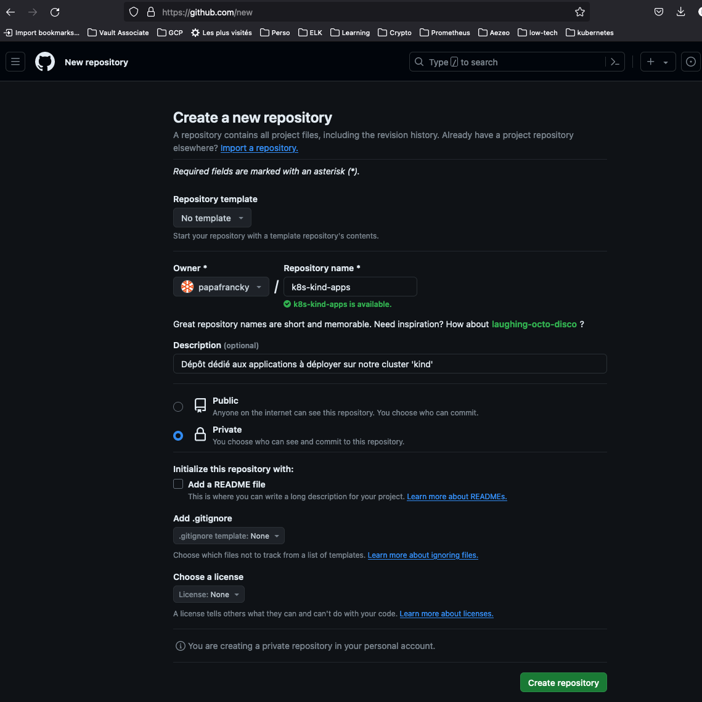
Clonage des dépôts en local
Une fois les dépôts créés, nous les clonons sur notre laptop :
Note
Nous clonerons tous nos dépôts dans le répertoire renseigné dans la variable ${LOCAL_GITHUB_REPOS}.
export LOCAL_GITHUB_REPOS="${HOME}/code/github"
cd ${LOCAL_GITHUB_REPOS}
git clone git@github.com:papafrancky/k8s-kind-fluxcd.git
git clone git@github.com:papafrancky/k8s-kind-apps.git
Bootstrap de FluxCD
Le projet Flux est composé d'un outil en ligne de commande (le FLux CLI) et d'une série de contrôleurs Kubernetes.
Pour installer Flux, vous devez d'abord télécharger le CLI de Flux. Ensuite, à l'aide de la CLI, vous pouvez déployer les contrôleurs Flux sur vos clusters et configurer votre premier pipeline de livraison GitOps.
La commande 'flux bootstrap github' déploie les contrôleurs Flux sur un cluster Kubernetes et configure ces derniers pour synchroniser l'état du cluster à partir d'un dépôt GitHub. En plus d'installer les contrôleurs, la commande bootstrap pousse les manifestes de Flux vers le dépôt GitHub et configure Flux pour qu'il se mette à jour à partir de Git.
| Doc | Link |
|---|---|
| Install the Flux controllers | https://fluxcd.io/flux/installation/#install-the-flux-controllers |
| Flux bootstrap for GitHub | https://fluxcd.io/flux/installation/bootstrap/github/ |
| GitHub default environment variables | https://docs.github.com/en/actions/learn-github-actions/variables#default-environment-variables |
export GITHUB_USER=papaFrancky
export GITHUB_TOKEN=<my_github_personal_access_token>
export FLUXCD_GITHUB_REPO=k8s-kind-fluxcd
flux bootstrap github \
--token-auth \
--owner ${GITHUB_USER} \
--repository ${FLUXCD_GITHUB_REPO} \
--branch=main \
--path=. \
--personal \
--components-extra=image-reflector-controller,image-automation-controller
► connecting to github.com
► cloning branch "main" from Git repository "https://github.com/papaFrancky/k8s-kind-fluxcd.git"
✔ cloned repository
► generating component manifests
✔ generated component manifests
✔ component manifests are up to date
► installing components in "flux-system" namespace
✔ installed components
✔ reconciled components
► determining if source secret "flux-system/flux-system" exists
► generating source secret
► applying source secret "flux-system/flux-system"
✔ reconciled source secret
► generating sync manifests
✔ generated sync manifests
✔ sync manifests are up to date
► applying sync manifests
✔ reconciled sync configuration
◎ waiting for Kustomization "flux-system/flux-system" to be reconciled
✔ Kustomization reconciled successfully
► confirming components are healthy
✔ helm-controller: deployment ready
✔ image-automation-controller: deployment ready
✔ image-reflector-controller: deployment ready
✔ kustomize-controller: deployment ready
✔ notification-controller: deployment ready
✔ source-controller: deployment ready
✔ all components are healthy
Vérifions dans les événements de FluxCD :
LAST SEEN TYPE REASON OBJECT MESSAGE
15m Normal NewArtifact GitRepository/flux-system stored artifact for commit 'Add Flux sync manifests'
15m Normal ReconciliationSucceeded Kustomization/flux-system Reconciliation finished in 2.536346081s, next run in 10m0s
15m Normal Progressing Kustomization/flux-system CustomResourceDefinition/alerts.notification.toolkit.fluxcd.io configured
CustomResourceDefinition/buckets.source.toolkit.fluxcd.io configured
CustomResourceDefinition/gitrepositories.source.toolkit.fluxcd.io configured
CustomResourceDefinition/helmcharts.source.toolkit.fluxcd.io configured
CustomResourceDefinition/helmreleases.helm.toolkit.fluxcd.io configured
CustomResourceDefinition/helmrepositories.source.toolkit.fluxcd.io configured
CustomResourceDefinition/imagepolicies.image.toolkit.fluxcd.io configured
CustomResourceDefinition/imagerepositories.image.toolkit.fluxcd.io configured
CustomResourceDefinition/imageupdateautomations.image.toolkit.fluxcd.io configured
CustomResourceDefinition/kustomizations.kustomize.toolkit.fluxcd.io configured
CustomResourceDefinition/ocirepositories.source.toolkit.fluxcd.io configured
CustomResourceDefinition/providers.notification.toolkit.fluxcd.io configured
CustomResourceDefinition/receivers.notification.toolkit.fluxcd.io configured
Namespace/flux-system configured
ServiceAccount/flux-system/helm-controller configured
ServiceAccount/flux-system/image-automation-controller configured
ServiceAccount/flux-system/image-reflector-controller configured
ServiceAccount/flux-system/kustomize-controller configured
ServiceAccount/flux-system/notification-controller configured
ServiceAccount/flux-system/source-controller configured
ClusterRole/crd-controller-flux-system configured
ClusterRole/flux-edit-flux-system configured
ClusterRole/flux-view-flux-system configured
ClusterRoleBinding/cluster-reconciler-flux-system configured
ClusterRoleBinding/crd-controller-flux-system configured
Service/flux-system/notification-controller configured
Service/flux-system/source-controller configured
Service/flux-system/webhook-receiver configured
Deployment/flux-system/helm-controller configured
Deployment/flux-system/image-automation-controller configured
Deployment/flux-system/image-reflector-controller configured
Deployment/flux-system/kustomize-controller configured
Deployment/flux-system/notification-controller configured
Deployment/flux-system/source-controller configured
Kustomization/flux-system/flux-system configured
NetworkPolicy/flux-system/allow-egress configured
NetworkPolicy/flux-system/allow-scraping configured
NetworkPolicy/flux-system/allow-webhooks configured
GitRepository/flux-system/flux-system configured
5m29s Normal ReconciliationSucceeded Kustomization/flux-system Reconciliation finished in 761.801712ms, next run in 10m0s
22s (x15 over 14m) Normal GitOperationSucceeded GitRepository/flux-system no changes since last reconcilation: observed revision 'main@sha1:1258fc09abf6cd1bd639cd18ce4a2e9e4c1a7a9b'
Cherchons les objets créés dans le namespace de FluxCD :
NAME READY STATUS RESTARTS AGE
pod/helm-controller-57694fc9d6-pbl5c 1/1 Running 0 19m
pod/image-automation-controller-5f7d999559-49fms 1/1 Running 0 19m
pod/image-reflector-controller-58db7c9785-mjfh5 1/1 Running 0 19m
pod/kustomize-controller-7f689848b9-k7hmd 1/1 Running 0 19m
pod/notification-controller-6cffcffd7d-rkmwl 1/1 Running 0 19m
pod/source-controller-7f95c446b6-b8gcd 1/1 Running 0 19m
NAME TYPE CLUSTER-IP EXTERNAL-IP PORT(S) AGE
service/notification-controller ClusterIP 10.96.206.29 <none> 80/TCP 19m
service/source-controller ClusterIP 10.96.94.126 <none> 80/TCP 19m
service/webhook-receiver ClusterIP 10.96.125.18 <none> 80/TCP 19m
NAME READY UP-TO-DATE AVAILABLE AGE
deployment.apps/helm-controller 1/1 1 1 19m
deployment.apps/image-automation-controller 1/1 1 1 19m
deployment.apps/image-reflector-controller 1/1 1 1 19m
deployment.apps/kustomize-controller 1/1 1 1 19m
deployment.apps/notification-controller 1/1 1 1 19m
deployment.apps/source-controller 1/1 1 1 19m
NAME DESIRED CURRENT READY AGE
replicaset.apps/helm-controller-57694fc9d6 1 1 1 19m
replicaset.apps/image-automation-controller-5f7d999559 1 1 1 19m
replicaset.apps/image-reflector-controller-58db7c9785 1 1 1 19m
replicaset.apps/kustomize-controller-7f689848b9 1 1 1 19m
replicaset.apps/notification-controller-6cffcffd7d 1 1 1 19m
replicaset.apps/source-controller-7f95c446b6 1 1 1 19m
Gestion automatique des déploiements d'applications par FluxCD
FluxCD peut gérer l'automatisation du déploiement d'applications packagées avec Helm ou bien directement depuis un dépôt Git. Nous allons d'abord nous concentrer sur le déploiement d'applications depuis un dépôt Git (GitHub dans notre cas).
Les objets de FluxCD sont un peu comme des poupées Russes, il est important de garder en tête leurs interdépendances pour comprendre l'ordre dans lequel nous devrons les créer.
graph RL
ImagePolicy("Image\nPolicy")
ImageRepository("Image\nRepository")
ImageRegistry("Docker\nimage\nregistry")
Deployment("Deployment")
ImageUpdateAutomation("Image\nUpdate\nAutomation")
GithubRepository("GitHub\nRepository")
Kustomization("Kustomization")
GitRepository("Git\nRepository")
DeployKeys("(secret)\ndeploy\nkeys")
HelmRelease("Helm\nRelease")
HelmRepository("Helm\nRepository")
HelmRegistry("Helm\nRegistry")
Alert("Alert")
Provider("Provider")
InstantMessaging("Discord\nInstant\nMessaging")
Webhook("(secret)\nDiscord\nWebhook")
classDef FluxCDObject fill:olivedrab,stroke:darkolivegreen,stroke-width:3px;
class ImagePolicy,ImageRepository,ImageUpdateAutomation,Kustomization,GitRepository,HelmRelease,HelmRepository,Alert,Provider FluxCDObject
ImageRegistry ----> ImageRepository
ImageRegistry --> Deployment
ImageRepository --> ImagePolicy
Deployment --> GithubRepository
GithubRepository --> ImageUpdateAutomation & GitRepository
DeployKeys --> GitRepository
GitRepository --> Kustomization
HelmRepository --> HelmRelease
HelmRegistry ----> HelmRepository
InstantMessaging & Webhook ----> Provider
Provider --> AlertNamespaces dédiés à l'application
Chaque application sera hébergée dans son propre namespace.
export LOCAL_GITHUB_REPOS="${HOME}/code/github"
cd ${LOCAL_GITHUB_REPOS}/k8s-kind-fluxcd
mkdir foo bar
kubectl create namespace foo --dry-run=client -o yaml > foo/namespace.yaml
kubectl create namespace bar --dry-run=client -o yaml > bar/namespace.yaml
kubectl apply -f foo/namespace.yaml
kubectl apply -f bar/namespace.yml
git add .
git commit -m "created namespace 'k8s-kind-apps'."
git push
Dépôt GitHub dédié aux applications
Les applications seront récupérées directement depuis un dépôt Git. Si elles avaient été packagées sous la forme d'une Helm Chart, FluxCD les aurait récupéré directement depuis un dépôt Helm.
Nous avons préalablement créé sur GitHub un dépôt dédié à l'hébergement de toutes les applications que FluxCD va gérer pour notre cluster : github.com/${GITHUB_USERNAME}/k8s-kind-apps.
Nous allons créer dans la copie locale (git clone) de ce dépôt sur notre poste de travail un sous-répertoire qui contiendra son application :
export LOCAL_GITHUB_REPOS="${HOME}/code/github"
cd ${LOCAL_GITHUB_REPOS}/k8s-kind-apps
mkdir foo bar
Les applications 'foo' et 'bar' sont très simples, et sont composées d'un pod et d'un service en frontal :
cat << EOF >> foo/deployment.yaml
apiVersion: apps/v1
kind: Deployment
metadata:
labels:
app: foo
name: foo
spec:
replicas: 1
selector:
matchLabels:
app: foo
template:
metadata:
labels:
app: foo
spec:
containers:
- name: agnhost
image: registry.k8s.io/e2e-test-images/agnhost:2.39
command:
- /agnhost
- netexec
- --http-port
- "8080"
EOF
cat << EOF >> bar/deployment.yaml
apiVersion: apps/v1
kind: Deployment
metadata:
labels:
app: bar
name: bar
spec:
replicas: 1
selector:
matchLabels:
app: bar
template:
metadata:
labels:
app: bar
spec:
containers:
- name: agnhost
image: registry.k8s.io/e2e-test-images/agnhost:2.39
command:
- /agnhost
- netexec
- --http-port
- "8080"
EOF
Nous avons décrit nos applications sous la forme de manifests YAML sur notre copie locale du dépôt dédié aux applications :
Il ne nous reste plus qu'à pousser les modifications sur notre dépôt GitHub :
export LOCAL_GITHUB_REPOS="${HOME}/code/github"
cd ${LOCAL_GITHUB_REPOS}/k8s-kind-apps
git add .
git commit -m 'feat: added foobar app.'
git push
Les applications se trouvent désormais bien dans le dépôt GitHub dédié aux applications :
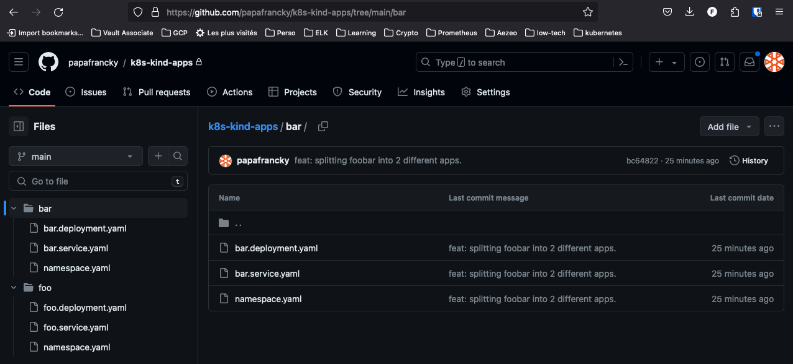
Nous allons pouvoir définir ces dépôts au niveau de FluxCd pour que ce dernier puisse les gérer.
Définition des GitRepository de chacune de nos applications
Nous allons définir au niveau de FluxCD le dépôt GitHub de chacune des applications et lui permettre de s'y connecter avec les droits d'écriture. Dans notre cas, nous utilisons un même dépôt GitHub pour toutes nos applications. Nous pourrions nous contenter de ne définir qu'un seul GitRepository mais avons fait le choix de réduire tant que possible des adhéences éventuelles entre applications. En définissant un GitRepository par application, nous permettons ainsi la suppression de tous les objets Kubernetes liées à une application sans dépendances avec les autres objets des applications restantes. Il n'y a pas de bon ou de mauvais choix, c'est simplement le nôtre.
Deploy Keys
Pour permettre à FluxCD de se connecter aux dépôts GitHub des applications qu'il doit gérer, nous devons créer une paire de clés SSH et déployer la clé publique sur les dépôts concernés.
Création des 'Deploy Keys'
Nous devons créer une paire de clés SSH pour permettre à FluxCD de se connecter avec les droits d'écriture au dépôt dédié à FluxCD. Nous en aurons besoin pour définir le 'GitRepository'. S'agissant de 'secrets', nous ne conserverons pas le manifest YAML dans le dépôt.
export GITHUB_USERNAME=papafrancky
flux create secret git k8s-kind-apps \
--url=ssh://github.com/${GITHUB_USERNAME}/k8s-kind-apps \
--namespace=foo
flux create secret git k8s-kind-apps \
--url=ssh://github.com/${GITHUB_USERNAME}/k8s-kind-apps \
--namespace=bar
Vérifions la bonne création du secret :
apiVersion: v1
data:
identity: LS0tLS1CRUdJTiBQUklWQVRFIEtFWS0tLS0tCk1JRzJBZ0VBTUJBR0J5cUdTTTQ5QWdFR0JTdUJCQUFpQklHZU1JR2JBZ0VCQkRCWk1HVXAwNTJLT1BmbE85UU4KTlZBbzBzY3Y1bzlMTElUVzFieUorZTFaVlRNQWl1cXd0YkhHdDc3TlVzUUZ0T2FoWkFOaUFBU0JyWXhNOUxUcwp0Wmp1d2hkL0J5bVI3Sks4cy9zQk5zSEkwdGprMFQyRGg 1dlFOTkNaK1lEb2pEb0FBZk82bWN3NytOalV3cGd1CnlOTTNGb081Q3piSTJ0aEwzdHNmMjV2aWZ3blpobERNZDRiSGdCMUNKekJrWHBROUlRTnBQNmM9Ci0tLS0tRU5EIFBSSVZBVEUgS0VZLS0tLS0K
identity.pub: ZWNkc2Etc2hhMi1uaXN0cDM4NCBBQUFBRTJWalpITmhMWE5vWVRJdGJtbHpkSEF6T0RRQUFBQUlibWx6ZEhBek9EUUFBQUJoQklHdGpFejB0T3kxbU83Q0YzOEhLWkhza3J5eit3RTJ3Y2pTMk9UUlBZT0htOUEwMEpuNWdPaU1PZ0FCODdxWnpEdjQyTlRDbUM3STB6Y1dnN2tMTnNqYTJFdmUyeC9ibStKL0NkbUdVTXgzaHNlQUhVSW5NR1J lbEQwaEEyay9wdz09Cg==
known_hosts: Z2l0aHViLmNvbSBlY2RzYS1zaGEyLW5pc3RwMjU2IEFBQUFFMlZqWkhOaExYTm9ZVEl0Ym1semRIQXlOVFlBQUFBSWJtbHpkSEF5TlRZQUFBQkJCRW1LU0VOalFFZXpPbXhrWk15N29wS2d3RkI5bmt0NVlScllNak51RzVOODd1UmdnNkNMcmJvNXdBZFQveTZ2MG1LVjBVMncwV1oyWUIvKytUcG9ja2c9
kind: Secret
metadata:
creationTimestamp: "2024-04-27T08:49:36Z"
name: k8s-kind-apps
namespace: foo
resourceVersion: "1295276"
uid: a319b96b-80a0-457a-aa33-0fc23ab7def6
type: Opaque
apiVersion: v1
data:
identity: LS0tLS1CRUdJTiBQUklWQVRFIEtFWS0tLS0tCk1JRzJBZ0VBTUJBR0J5cUdTTTQ5QWdFR0JTdUJCQUFpQklHZU1JR2JBZ0VCQkRDcVRkUlpaK1BuWjRYYWRCelMKb2hoQjdjMVBVNEh5OVYzeXp6dTFJdU9HMlFVd09vMUtBN0I3M0dweGJaUUI2K2VoWkFOaUFBUnA5UmFwaFMzTgpPaVRsTzZ2TEdQSG0va2NHR2YzYzk0eHpRR041Q0ltV1V WS0xlQi9NajdGK1d0RzEyVmZ3QVRGaTFoclhkVUg4CkxWQ29JUjJoeUp3Y251R2dZaEYrc3pTanBuSDA1dVpuVm5ibXhUZmlleWkxNUNibGpOOGVrQnM9Ci0tLS0tRU5EIFBSSVZBVEUgS0VZLS0tLS0K
identity.pub: ZWNkc2Etc2hhMi1uaXN0cDM4NCBBQUFBRTJWalpITmhMWE5vWVRJdGJtbHpkSEF6T0RRQUFBQUlibWx6ZEhBek9EUUFBQUJoQkduMUZxbUZMYzA2Sk9VN3E4c1k4ZWIrUndZWi9kejNqSE5BWTNrSWlaWlJVb3Q0SDh5UHNYNWEwYlhaVi9BQk1XTFdHdGQxUWZ3dFVLZ2hIYUhJbkJ5ZTRhQmlFWDZ6TktPbWNmVG01bWRXZHViRk4rSjdLTFh rSnVXTTN4NlFHdz09Cg==
known_hosts: Z2l0aHViLmNvbSBlY2RzYS1zaGEyLW5pc3RwMjU2IEFBQUFFMlZqWkhOaExYTm9ZVEl0Ym1semRIQXlOVFlBQUFBSWJtbHpkSEF5TlRZQUFBQkJCRW1LU0VOalFFZXpPbXhrWk15N29wS2d3RkI5bmt0NVlScllNak51RzVOODd1UmdnNkNMcmJvNXdBZFQveTZ2MG1LVjBVMncwV1oyWUIvKytUcG9ja2c9
kind: Secret
metadata:
creationTimestamp: "2024-04-27T08:50:31Z"
name: k8s-kind-apps
namespace: bar
resourceVersion: "1295422"
uid: eaab7311-c1f1-4579-8157-0a2d131f9e2b
type: Opaque
Ajout de la clé publique sur le dépôt GitHub
Les clés publiques doivent être extraites des 'secrets' et renseignées dans les paramètres du dépôt GitHub k8s-kind-fluxcd.
'''sh ecdsa-sha2-nistp384 AAAAE2VjZHNhLXNoYTItbmlzdHAzODQAAAAIbmlzdHAzODQAAABhBIGtjEz0tOy1mO7CF38HKZHskryz+wE2wcjS2OTRPYOHm9A00Jn5gOiMOgAB87qZzDv42NTCmC7I0zcWg7kLNsja2Eve2x/bm+J/CdmGUMx3hseAHUInMGRelD0hA2k/pw== '''
'''sh ecdsa-sha2-nistp384 AAAAE2VjZHNhLXNoYTItbmlzdHAzODQAAAAIbmlzdHAzODQAAABhBGn1FqmFLc06JOU7q8sY8eb+RwYZ/dz3jHNAY3kIiZZRUot4H8yPsX5a0bXZV/ABMWLWGtd1QfwtUKghHaHInBye4aBiEX6zNKOmcfTm5mdWdubFN+J7KLXkJuWM3x6QGw== '''
Une fois sur la page de dépôt, cliquer sur le bouton Settings, puis dans la colonne de gauche sur la page suivante, sur le line Deploy Keys dans la partie 'Security' :
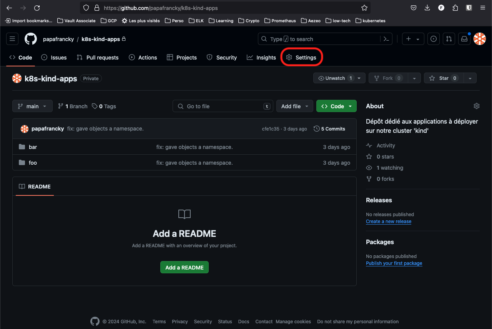
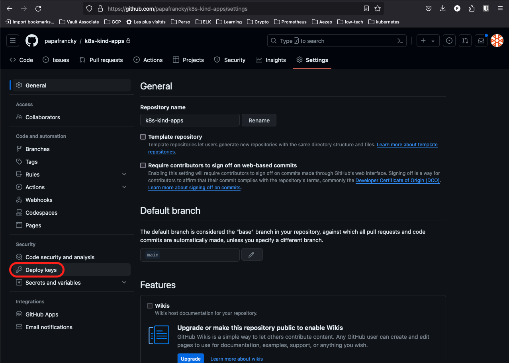
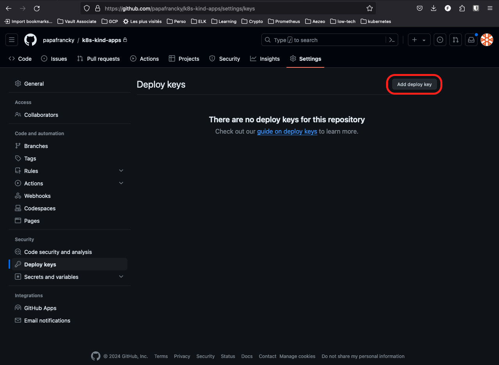
Warning
La case 'Allow write access' doit être cochée pour permettre à FluxCD d'apporter des modifications dans son dépôt !
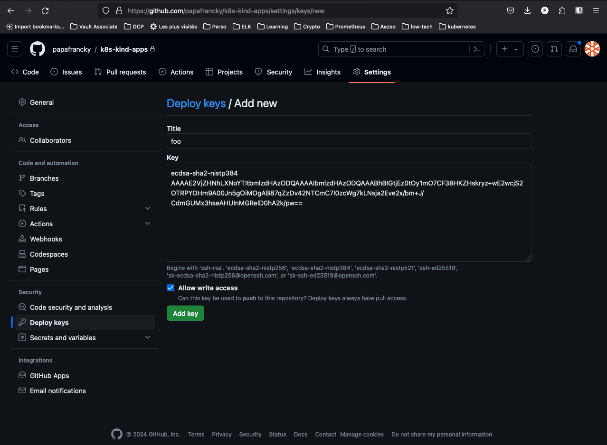
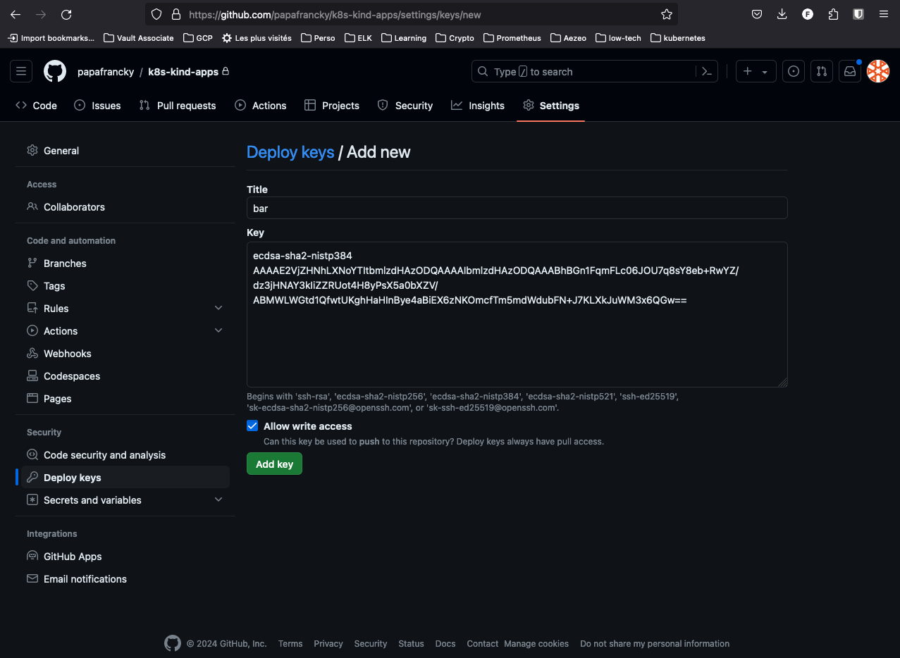
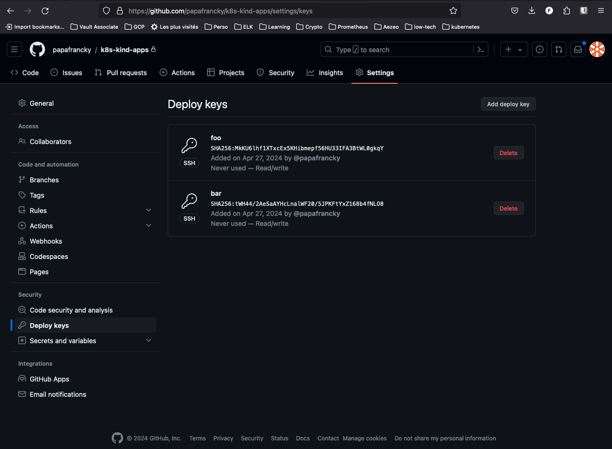
Définition du GitRepository "k8s-kind-apps" pour chacune des applications
L'API GitRepository définit une source pour produire un artefact pour une révision d'un dépôt Git.
Info
https://fluxcd.io/flux/components/source/gitrepositories/
Voici les informations qu'il faudra donner pour définir un 'GitRepository' :
- Le nom que nous souhaitons lui donner : k8s-kind-fluxcd;
- L'URL du dépôt GitHub : ssh://git@github.com/${GITHUB_USERNAME}/k8s-kind-fluxcd.git;
- La branche du dépôt d'où récupérer le code : main;
- Le secret d'où extraire la clé privée pour se connecter au dépôt GitHub : foo ou bar selon l'application concernée.
export LOCAL_GITHUB_REPOS="${HOME}/code/github"
export GITHUB_USERNAME=papafrancky
cd ${LOCAL_GITHUB_REPOS}/k8s-kind-fluxcd
mkdir -p apps/foo apps/bar
flux create source git k8s-kind-apps \
--url=ssh://git@github.com/${GITHUB_USERNAME}/k8s-kind-apps.git \
--branch=main \
--secret-ref=k8s-kind-apps \
--namespace=foo \
--export > apps/foo/gitrepository.yaml
flux create source git k8s-kind-apps \
--url=ssh://git@github.com/${GITHUB_USERNAME}/k8s-kind-apps.git \
--branch=main \
--secret-ref=k8s-kind-apps \
--namespace=bar \
--export > apps/bar/gitrepository.yaml
Définition des 'Kustomizations' pour chacun des GitRepositories
Tip
Nommer le manifest 'kustomize.yml' pose des problèmes, le nom doit être réservé pour les besoins internes de Flux. Nous le nommerons 'sync.yaml'.
export LOCAL_GITHUB_REPOS="${HOME}/code/github"
cd ${LOCAL_GITHUB_REPOS}/k8s-kind-fluxcd
flux create kustomization foo \
--source=GitRepository/k8s-kind-apps.foo \
--path="./foo" \
--prune=true \
--namespace=foo \
--export > apps/foo/sync.yaml
flux create kustomization bar \
--source=GitRepository/k8s-kind-apps.bar \
--path="./bar" \
--prune=true \
--namespace=bar \
--export > apps/bar/sync.yaml
Il est temps de pousser nos modifications dans le dépôt GitHub :
export LOCAL_GITHUB_REPOS="${HOME}/code/github"
cd ${LOCAL_GITHUB_REPOS}/k8s-kind-fluxcd
git status
git add .
git commit -m "feat: added GitRepositories and Kustomizations for 'foo' and 'bar' apps."
git push
Forçons la réconciliation :
► annotating GitRepository flux-system in flux-system namespace
✔ GitRepository annotated
◎ waiting for GitRepository reconciliation
✔ fetched revision main@sha1:f9875e137abb0d4f810b4042fa98713adaca2701
► annotating Kustomization flux-system in flux-system namespace
✔ Kustomization annotated
◎ waiting for Kustomization reconciliation
✔ applied revision main@sha1:f9875e137abb0d4f810b4042fa98713adaca2701
Nous devrions désormais voir le GitRepository défini au niveau du cluster :
NAME URL AGE READY STATUS
k8s-kind-apps ssh://git@github.com/papafrancky/k8s-kind-apps.git 2m11s True stored artifact for revision 'main@sha1:cfe1c35724883dce2eaf428f144faeb3da27873b'
NAME URL AGE READY STATUS
k8s-kind-apps ssh://git@github.com/papafrancky/k8s-kind-apps.git 2m28s True stored artifact for revision 'main@sha1:cfe1c35724883dce2eaf428f144faeb3da27873b'
Surtout, nous devrions voir nos applications 'foo' et 'bar' déployées sur le cluster :
ImageRepository
Nos deux applications 'foo' et 'bar' utilisent une même image Docker ("e2e-test-images/agnhost") et nous aimerions qu'elle soit mise à jour automatiquement si une nouvelle version venait à être publiée. La mise en place d'un tel process d'automatisation nécessite la définition préalable d'un 'ImageRepository' auquel nous associerons une 'ImagePolicy'.
export LOCAL_GITHUB_REPOS="${HOME}/code/github"
export GITHUB_USERNAME=papafrancky
cd ${LOCAL_GITHUB_REPOS}/k8s-kind-fluxcd
flux create image repository agnhost \
--image=registry.k8s.io/e2e-test-images/agnhost \
--interval=5m \
--namespace=foo \
--export > apps/foo/agnhost.imagerepository.yaml
flux create image repository agnhost \
--image=registry.k8s.io/e2e-test-images/agnhost \
--interval=5m \
--namespace=bar \
--export > apps/bar/agnhost.imagerepository.yaml
git add .
git commit -m "feat: added image repository for foo and bar apps."
git push
Vérifions la bonne création des 'ImagePolicies':
apiVersion: image.toolkit.fluxcd.io/v1beta2
kind: ImageRepository
metadata:
creationTimestamp: "2024-04-27T09:52:39Z"
finalizers:
- finalizers.fluxcd.io
generation: 1
labels:
kustomize.toolkit.fluxcd.io/name: flux-system
kustomize.toolkit.fluxcd.io/namespace: flux-system
name: agnhost
namespace: foo
resourceVersion: "1305975"
uid: d078ca2e-f277-4d29-bdd3-ef140d6e34a8
spec:
exclusionList:
- ^.*\.sig$
image: registry.k8s.io/e2e-test-images/agnhost
interval: 5m0s
provider: generic
status:
canonicalImageName: registry.k8s.io/e2e-test-images/agnhost
conditions:
- lastTransitionTime: "2024-04-27T09:52:39Z"
message: 'successful scan: found 27 tags'
observedGeneration: 1
reason: Succeeded
status: "True"
type: Ready
lastScanResult:
latestTags:
- "2.9"
- "2.51"
- "2.50"
- "2.48"
- "2.47"
- "2.45"
- "2.44"
- "2.43"
- "2.41"
- "2.40"
scanTime: "2024-04-27T09:52:39Z"
tagCount: 27
observedExclusionList:
- ^.*\.sig$
observedGeneration: 1
apiVersion: image.toolkit.fluxcd.io/v1beta2
kind: ImageRepository
metadata:
creationTimestamp: "2024-04-27T09:52:38Z"
finalizers:
- finalizers.fluxcd.io
generation: 1
labels:
kustomize.toolkit.fluxcd.io/name: flux-system
kustomize.toolkit.fluxcd.io/namespace: flux-system
name: agnhost
namespace: bar
resourceVersion: "1305978"
uid: 57f01130-5ef2-42e2-be24-5509c5232898
spec:
exclusionList:
- ^.*\.sig$
image: registry.k8s.io/e2e-test-images/agnhost
interval: 5m0s
provider: generic
status:
canonicalImageName: registry.k8s.io/e2e-test-images/agnhost
conditions:
- lastTransitionTime: "2024-04-27T09:52:39Z"
message: 'successful scan: found 27 tags'
observedGeneration: 1
reason: Succeeded
status: "True"
type: Ready
lastScanResult:
latestTags:
- "2.9"
- "2.51"
- "2.50"
- "2.48"
- "2.47"
- "2.45"
- "2.44"
- "2.43"
- "2.41"
- "2.40"
scanTime: "2024-04-27T09:52:39Z"
tagCount: 27
observedExclusionList:
- ^.*\.sig$
observedGeneration: 1
Nous pouvons d'ores et déjà constater que nous n'utilisons pas la version la plus récente de l'image 'e2e-test-images/agnhost'.
ImagePolicy
- nous utilisons la version 2.39 :
- la version la plus récente est la 2.51 :
Imaginons que nous souhaitions disposer de l'image 2.4.x la plus récente. Nous pouvons demander à FluxCD de gérer ces mises à jour automatiquement en définissant une 'ImagePolicy' distincte pour les 'ImageRepository' 'agnhost' de nos applications 'foo' et 'bar'.
Note
https://github.com/Masterminds/semver#checking-version-constraints
Warning
Les images dans le dépôt ne sont suivent pas le versionnement 'SemVer'. Nous devons ici jouer avec une expression régulière et un tri croissant pour arriver à nos fins.
export LOCAL_GITHUB_REPOS="${HOME}/code/github"
export GITHUB_USERNAME=papafrancky
cd ${LOCAL_GITHUB_REPOS}/k8s-kind-fluxcd
flux create image policy agnhost \
--image-ref=agnhost \
--namespace=foo \
--select-numeric asc \
--filter-regex='\d\.\d' \
--export > apps/foo/agnhost.imagepolicy.yaml
flux create image policy agnhost \
--image-ref=agnhost \
--namespace=bar \
--select-numeric asc \
--filter-regex='\d\.\d' \
--export > apps/bar/agnhost.imagepolicy.yaml
git add .
git commit -m "feat: defined an image policy for foo and bar apps."
git push
flux reconcile kustomization flux-system --with-source
Vérifions la bonne création des Image Policies :
Marquage des manifests de déploiement de de 'foo' et 'bar'
Nous devons maintenant indiquer à FluxCD où mettre la version de l'image à jour dans les manifests de l'application 'foobar'. En effet, si FluxCD est capable de détecter une nouvelle version de l'image conforme à notre politique de mise à jour (dans notre cas, toutes les versions 2.x), il doit aussi mettre le code de déploiement de l'application.
Dans le cas de nos applications, l'image Docker et sa version sont définis dans les manifests qui décrivent les 'deployments' :
- ${LOCAL_GITHUB_REPOS}/k8s-kind-apps/foo/deployment.yaml;
- ${LOCAL_GITHUB_REPOS}/k8s-kind-apps/bar/deployment.yaml.
Ajoutons un marqueur pour permettre à FluxCD de mettre la version de l'image à jour :
export LOCAL_GITHUB_REPOS="${HOME}/code/github"
export GITHUB_USERNAME=papafrancky
cd ${LOCAL_GITHUB_REPOS}/k8s-kind-apps
gsed -i 's/agnhost:2\.39/agnhost:2\.39 # {"$imagepolicy": "foo:agnhost"}/' foo/deployment.yaml
gsed -i 's/agnhost:2\.39/agnhost:2\.39 # {"$imagepolicy": "bar:agnhost"}/' bar/deployment.yaml
git add .
git commit -m "feat: added a marker on foobar's pods manifests."
git push
flux reconcile kustomization flux-system --with-source
Configure image update for custom resources
https://fluxcd.io/flux/guides/image-update/#configure-image-update-for-custom-resources
Le format du marqueur de l'image policy est le suivant :
* {"$imagepolicy": "<policy-namespace>:<policy-name>"}
* {"$imagepolicy": "<policy-namespace>:<policy-name>:tag"}
* {"$imagepolicy": "<policy-namespace>:<policy-name>:name"}
apiVersion: apps/v1
kind: Deployment
metadata:
name: foo
namespace: foo
labels:
app: foo
spec:
replicas: 1
selector:
matchLabels:
app: foo
template:
metadata:
labels:
app: foo
spec:
containers:
- name: agnhost
image: registry.k8s.io/e2e-test-images/agnhost:2.39 # {"$imagepolicy": "foobar:foobar"}
command:
- /agnhost
- netexec
- --http-port
- "8080"
apiVersion: apps/v1
kind: Deployment
metadata:
name: bar
namespace: bar
labels:
app: bar
spec:
replicas: 1
selector:
matchLabels:
app: bar
template:
metadata:
labels:
app: bar
spec:
containers:
- name: agnhost
image: registry.k8s.io/e2e-test-images/agnhost:2.39 # {"$imagepolicy": "foobar:foobar"}
command:
- /agnhost
- netexec
- --http-port
- "8080"
Image Update Automation
Il ne nous reste plus qu'à tout mettre en musique en créant une 'ImageUpdateAutomation' pour chacune de nos applications.
flux create image update
https://fluxcd.io/flux/cmd/flux_create_image_update/#examples
export LOCAL_GITHUB_REPOS="${HOME}/code/github"
cd ${LOCAL_GITHUB_REPOS}/k8s-kind-fluxcd
flux create image update agnhost \
--namespace=foo \
--git-repo-ref=k8s-kind-apps \
--git-repo-path="./foo" \
--checkout-branch=main \
--author-name=FluxCD \
--author-email=19983231-papafrancky@users.noreply.github.com \
--commit-template="{{range .Updated.Images}}{{println .}}{{end}}" \
--export > apps/foo/imageupdateautomation.yaml
flux create image update agnhost \
--namespace=bar \
--git-repo-ref=k8s-kind-apps \
--git-repo-path="./bar" \
--checkout-branch=main \
--author-name=FluxCD \
--author-email=19983231-papafrancky@users.noreply.github.com \
--commit-template="{{range .Updated.Images}}{{println .}}{{end}}" \
--export > apps/bar/imageupdateautomation.yaml
git add .
git commit -m "feat: added ImageUpdateAutomations to foo and bar applications respectively."
git push
flux reconcile kustomization flux-system --with-source
---
apiVersion: image.toolkit.fluxcd.io/v1beta1
kind: ImageUpdateAutomation
metadata:
name: agnhost
namespace: foo
spec:
git:
checkout:
ref:
branch: main
commit:
author:
email: 19983231-papafrancky@users.noreply.github.com
name: FluxCD
messageTemplate: '{{range .Updated.Images}}{{println .}}{{end}}'
interval: 1m0s
sourceRef:
kind: GitRepository
name: k8s-kind-apps
update:
path: ./foo
strategy: Setters
---
apiVersion: image.toolkit.fluxcd.io/v1beta1
kind: ImageUpdateAutomation
metadata:
name: agnhost
namespace: bar
spec:
git:
checkout:
ref:
branch: main
commit:
author:
email: 19983231-papafrancky@users.noreply.github.com
name: FluxCD
messageTemplate: '{{range .Updated.Images}}{{println .}}{{end}}'
interval: 1m0s
sourceRef:
kind: GitRepository
name: k8s-kind-apps
update:
path: ./bar
strategy: Setters
Définir son adresse email de commit
https://docs.github.com/en/account-and-profile/setting-up-and-managing-your-personal-account-on-github/managing-email-preferences/setting-your-commit-email-address#about-commit-email-addresses
Comment récupérer l'ID de son compte GitHub
https://api.github.com/users/${GITHUB_USERNAME}
Surveillons la mise à jour des images :
Vérifions la version des images utilisées :
Enfin, assurons-nous que FluxCD ait bien pu modifier le deployment des applications pour prendre la version de l'image la plus récente en compte :
Warning
Nous devons mettre à jour notre copie locale du dépôt des applications pour constater la boone réécriture de FluxCD.
Les manifests ont bien été modifiés. Vérifions la mise à jour de la version des images :
Les images sont passées de la version initiale (2.39) à la version la plus récente conforme à l'ImagePolicy (2.51).
Tout fonctionne comme attendu !
Exposition des applications
L'exposition des applications hébergées sur le cluster doit être gérée en dehors des applications. Nous allons définir les règles de routage de notre Ingress controller Nginx dans le dépôt GitHub dédié à FluxCD :
Note
Bien que le contrôleur Ingress puisse être déployé dans n'importe quel namespace, il est généralement déployé dans un namespace distinct de vos services d'application (par exemple, ingress ou kube-system). Il peut voir les règles Ingress dans tous les autres espaces de noms et les récupérer. Cependant, chaque règle Ingress doit résider dans l'espace de noms où réside l'application qu'elle configure.
export LOCAL_GITHUB_REPOS="${HOME}/code/github"
cd ${LOCAL_GITHUB_REPOS}/k8s-kind-fluxcd
cat << EOF >> apps/foo/ingress.yaml
---
apiVersion: networking.k8s.io/v1
kind: Ingress
metadata:
name: foo
namespace: foo
annotations:
nginx.ingress.kubernetes.io/rewrite-target: /$2
spec:
rules:
- http:
paths:
- pathType: Prefix
path: /foo(/|$)(.*)
backend:
service:
name: foo
port:
number: 8080
EOF
cat << EOF >> apps/bar/ingress.yaml
---
apiVersion: networking.k8s.io/v1
kind: Ingress
metadata:
name: bar
namespace: bar
annotations:
nginx.ingress.kubernetes.io/rewrite-target: /$2
spec:
rules:
- http:
paths:
- pathType: Prefix
path: /bar(/|$)(.*)
backend:
service:
name: bar
port:
number: 8080
EOF
git add .
git commit -m "feat: setting up Ingress routes for foo and bar."
git push
flux reconcile kustomization flux-system --with-source
Testons le bon fonctionnement de nos routes :
curl http://localhost/foo # -> NOW: 2024-04-27 18:14:24.152568822 +0000 UTC m=+5403.294573418%
curl http://localhost/foo/hostname # -> foo-9d658c7db-x6v84%
curl http://localhost/bar # -> NOW: 2024-04-27 18:14:26.677481395 +0000 UTC m=+5108.710059928%
curl http://localhost/bar/hostname # -> bar-5c7c6495ff-954bh%
Le routage fonctionne comme attendu !
Notifications Discord
Nous avons configuré FluxCD pour gérer automatiquement la mise à jour des images de nos applications 'foo' et 'bar' et avons exposé ces dernières via notre Ingress controller Nginx.
Nous aimerions maintenant être informés lorsqu'un changement est opéré sur nos applications et allons nous y atteler dans cette partie.
Nous avons retenu la plateforme de messagere instantanée 'Discord' car elle permet de configurer des 'webhooks' sur des 'channels' sans pour autant devoir payer un abonnement, comme c'est le cas par exemple avec Slack.
Installation du client 'Discord'
Pour l'installer, il faut accéder au site web discord.com et télécharger le client :
Création d'un 'serveur' et d'un 'channel' pour chaque application
Création d'un serveur Discord
Discord permet la création de 'serveurs' que nous pouvons restreindre pour notre usage personnel et qui hébergeront les 'salons' que nous dédierons à l'envoi de notifications de FluxCD concernant nos applications.
Une fois le client Discord démarré, cliquons sur le '+' situé dasn la colonne de gauche. Nous répondrons ensuite aux différentes questions et donnerons à notre serveur le nom de notre cluster Kubernetes : k8s-kind.
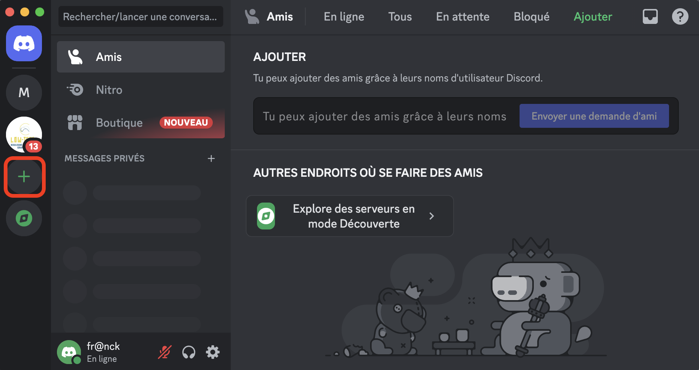
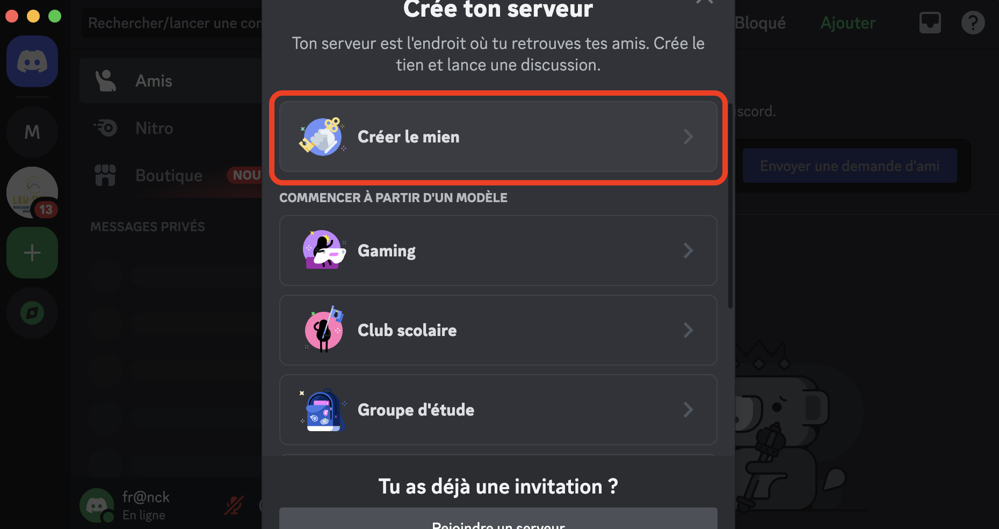
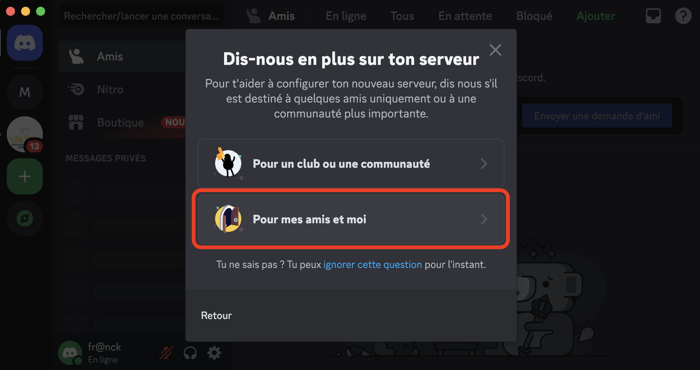
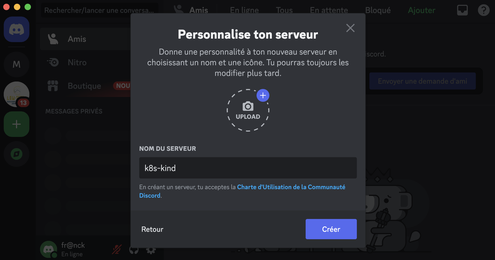
Création d'un salon dans notre serveur Discord
Nous souhaitons créer un salon pour chacune de nos applications. La procédure étant la même pour tous les salons, nous montrerons la création du salon pour l'application 'foo'. Vous devrez faire la même chose pour l'application 'bar'.
Sélectionnez le serveur 'k8s-kind' dans la colonne de gauche, puis dans la partie 'salons textuels', cliquez sur le '+' :
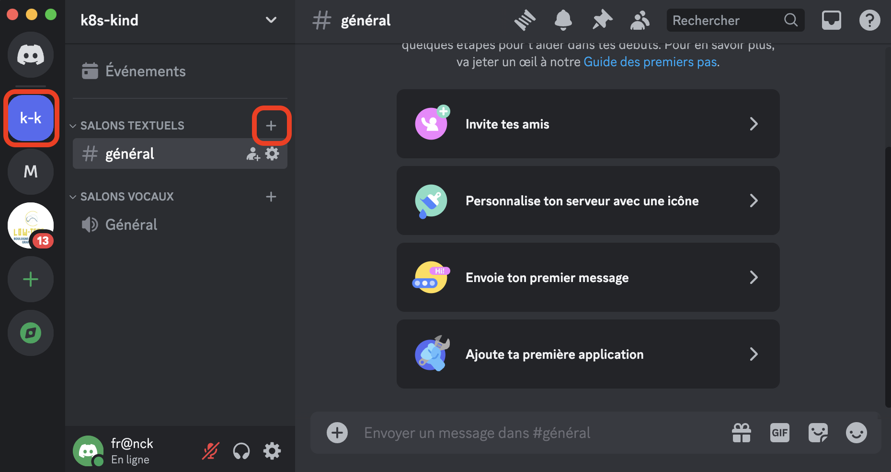
Précisez qu'il s'agit bien d'un salon textuel, précisez son nom 'foo' et choisissez de le rendre privé :
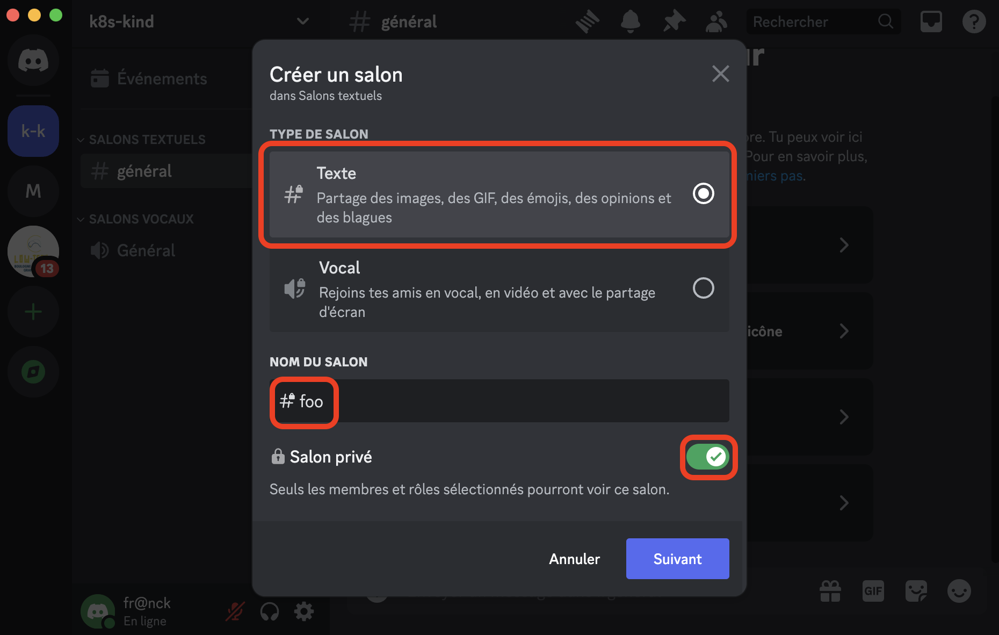
Passez l'étape d'ajout de membres :
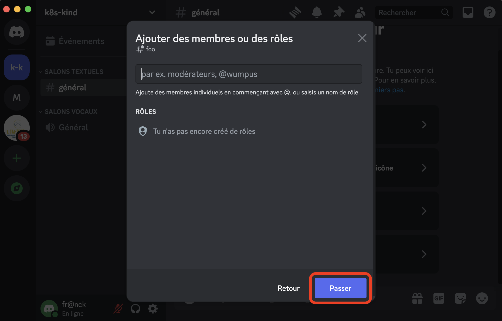
Votre salon est prêt.
Création d'un 'webhook' pour chaque salon
Cliquez sur la roue dentée 'paramètres' à droite du nom du salon, puis sur 'intégrations' et enfin sur le bouton 'Créer un webhook'.
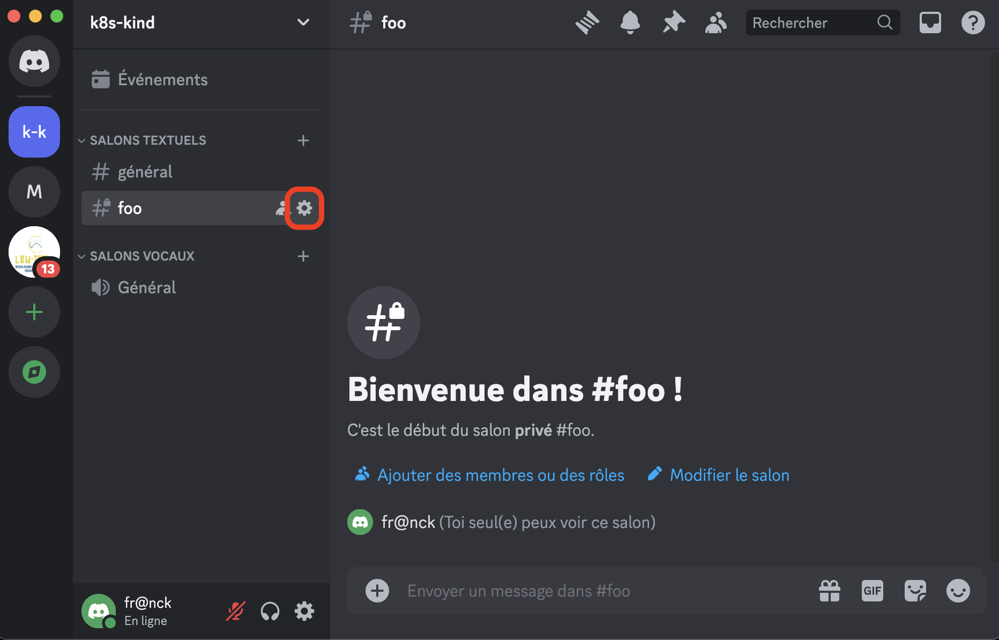
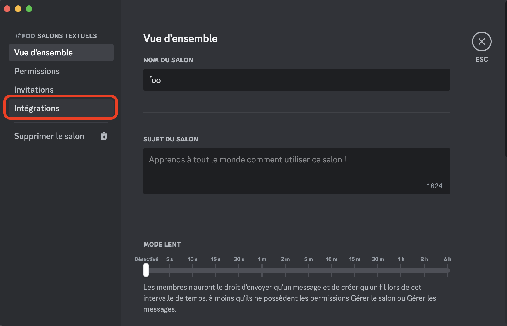

Un nom lui est donné de manière aléatoire (ex: 'Spidey Bot'). Pour changer le nom du 'webhook' par 'FluxCD', copiez l'URL en cliquant sur le bouton idoine, et enregistrez les modifications :
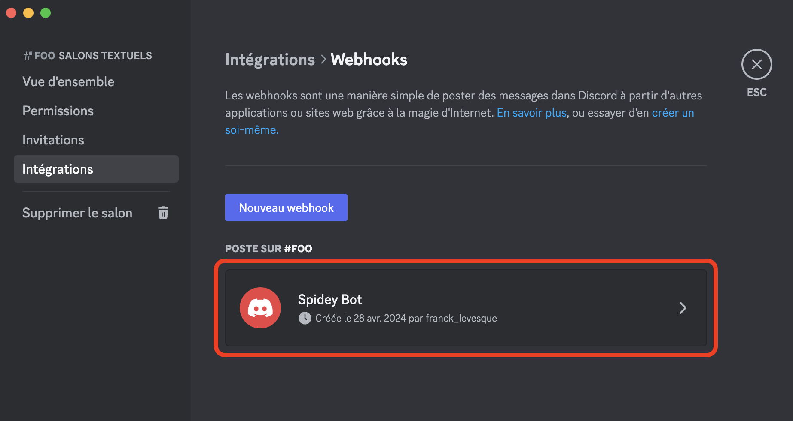
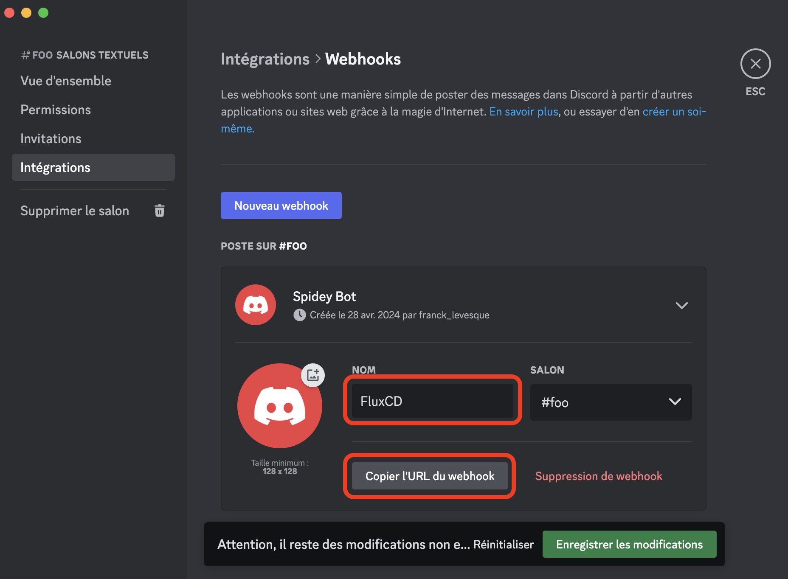
Nous répétons les mêmes opérations pour la création du salon privé _'bar'_.
Les URLs des webhooks des salons sont les suivants :
| Salon privé | URL |
|---|---|
| foo | https://discord.com/api/webhooks/1234167966258561045/z-vEpmh08xnLZHypqKsjzUQd4FwdCDvFWhKAHaJKg7k6YbuU1VfkxqLROXme7ihb8jKP |
| bar | https://discord.com/api/webhooks/1234169188231413912/ppnMSjYpE-efPic1AVIGlpZW0m5p_nzj8qiaqldJgd_u_O97Rhm5FJbQLlUg9z5DBC_0 |
Enregistrement des webhook des salons Discord
Ces informations sont considérées comme sensibles dasn la mesure où quiconque en disposerait pourrait publier des informations dans nos salons privés. Nous les enregistrerons dans Kubernetes comme des 'secrets'.
export WEBHOOK_FOO="https://discord.com/api/webhooks/1234167966258561045/z-vEpmh08xnLZHypqKsjzUQd4FwdCDvFWhKAHaJKg7k6YbuU1VfkxqLROXme7ihb8jKP"
export WEBHOOK_BAR="https://discord.com/api/webhooks/1234169188231413912/ppnMSjYpE-efPic1AVIGlpZW0m5p_nzj8qiaqldJgd_u_O97Rhm5FJbQLlUg9z5DBC_0"
export LOCAL_GITHUB_REPOS="${HOME}/code/github"
cd ${LOCAL_GITHUB_REPOS}/k8s-kind-fluxcd
kubectl -n foo create secret generic discord-webhook --from-literal=address=${WEBHOOK_FOO} --dry-run=client -o yaml > apps/foo/discord-webhook.secret.yaml
kubectl -n bar create secret generic discord-webhook --from-literal=address=${WEBHOOK_BAR} --dry-run=client -o yaml > apps/bar/discord-webhook.secret.yaml
Création des 'notification providers'
Info
https://fluxcd.io/flux/components/notification/providers/#discord
export LOCAL_GITHUB_REPOS="${HOME}/code/github"
cd ${LOCAL_GITHUB_REPOS}/k8s-kind-fluxcd
flux create alert-provider discord \
--type=discord \
--secret-ref=discord-webhook \
--channel=foo \
--username=FluxCD \
--namespace=foo \
--export > apps/foo/notification-provider.yaml
flux create alert-provider discord \
--type=discord \
--secret-ref=discord-webhook \
--channel=bar \
--username=FluxCD \
--namespace=bar \
--export > apps/bar/notification-provider.yaml
Configuration des alertes Discord
export LOCAL_GITHUB_REPOS="${HOME}/code/github"
cd ${LOCAL_GITHUB_REPOS}/k8s-kind-fluxcd
flux create alert discord \
--event-severity=info \
--event-source='GitRepository/*,Kustomization/*,ImageRepository/*,ImagePolicy/*,HelmRepository/*,HelmRelease/*' \
--provider-ref=discord \
--namespace=foo \
--export > apps/foo/notification-alert.yaml
flux create alert discord \
--event-severity=info \
--event-source='GitRepository/*,Kustomization/*,ImageRepository/*,ImagePolicy/*,HelmRepository/*,HelmRelease/*' \
--provider-ref=discord \
--namespace=bar \
--export > apps/bar/notification-alert.yaml
---
apiVersion: notification.toolkit.fluxcd.io/v1beta2
kind: Alert
metadata:
name: discord
namespace: foo
spec:
eventSeverity: info
eventSources:
- kind: GitRepository
name: '*'
- kind: Kustomization
name: '*'
- kind: ImageRepository
name: '*'
- kind: ImagePolicy
name: '*'
- kind: HelmRepository
name: '*'
- kind: HelmRelease
name: '*'
providerRef:
name: discord
---
apiVersion: notification.toolkit.fluxcd.io/v1beta2
kind: Alert
metadata:
name: discord
namespace: bar
spec:
eventSeverity: info
eventSources:
- kind: GitRepository
name: '*'
- kind: Kustomization
name: '*'
- kind: ImageRepository
name: '*'
- kind: ImagePolicy
name: '*'
- kind: HelmRepository
name: '*'
- kind: HelmRelease
name: '*'
providerRef:
name: discord
Activation des alertes et notifications
Mise en place
Poussons nos modifications dans notre dépôt GitHub :
export LOCAL_GITHUB_REPOS="${HOME}/code/github"
cd ${LOCAL_GITHUB_REPOS}/k8s-kind-fluxcd
git add .
git commit -m "feat: setting up Discord alerting."
git push
flux reconcile kustomization flux-system --with-source
Tests
Vérifions la bonne création des alertes et notification providers :
NAMESPACE NAME AGE READY STATUS
bar provider.notification.toolkit.fluxcd.io/discord 3m16s True Initialized
foo provider.notification.toolkit.fluxcd.io/discord 3m16s True Initialized
NAMESPACE NAME AGE READY STATUS
bar alert.notification.toolkit.fluxcd.io/discord 3m16s True Initialized
foo alert.notification.toolkit.fluxcd.io/discord 3m16s True Initialized
Testons leur bon fonctionnement : nous allons désactiver les 'Image Policies' de sorte qu'elles installent la version la plus ancienne des images.
export LOCAL_GITHUB_REPOS="${HOME}/code/github"
cd ${LOCAL_GITHUB_REPOS}/k8s-kind-fluxcd
gsed -i 's/order: asc/order: desc/' apps/foo/agnhost.imagepolicy.yaml
gsed -i 's/order: asc/order: desc/' apps/bar/agnhost.imagepolicy.yaml
git add .
git commit -m "test: changing image policies to test Discord alerting."
git push
flux reconcile kustomization flux-system --with-source
apiVersion: image.toolkit.fluxcd.io/v1beta2 kind: ImagePolicy metadata: name: agnhost namespace: bar spec: imageRepositoryRef: name: agnhost filterTags: pattern: '\d.\d\d' extract: "" policy: numerical: order: desc
Nous recevons les notifications suivantes dans les salons '#foo' et '#bar' :
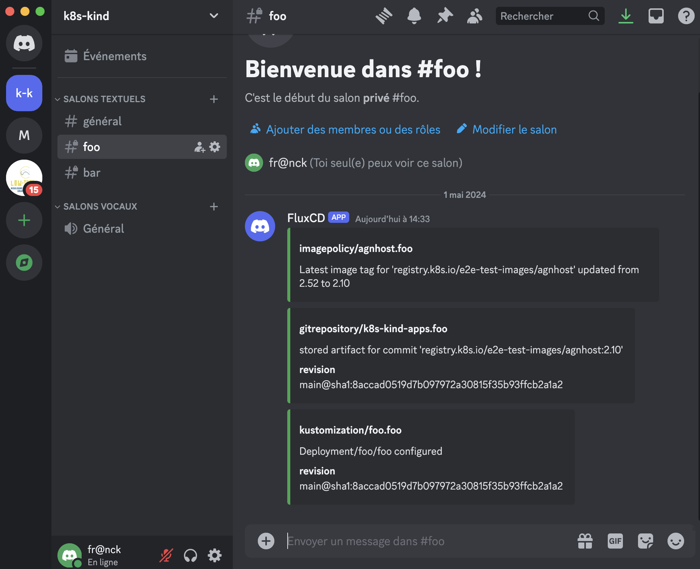
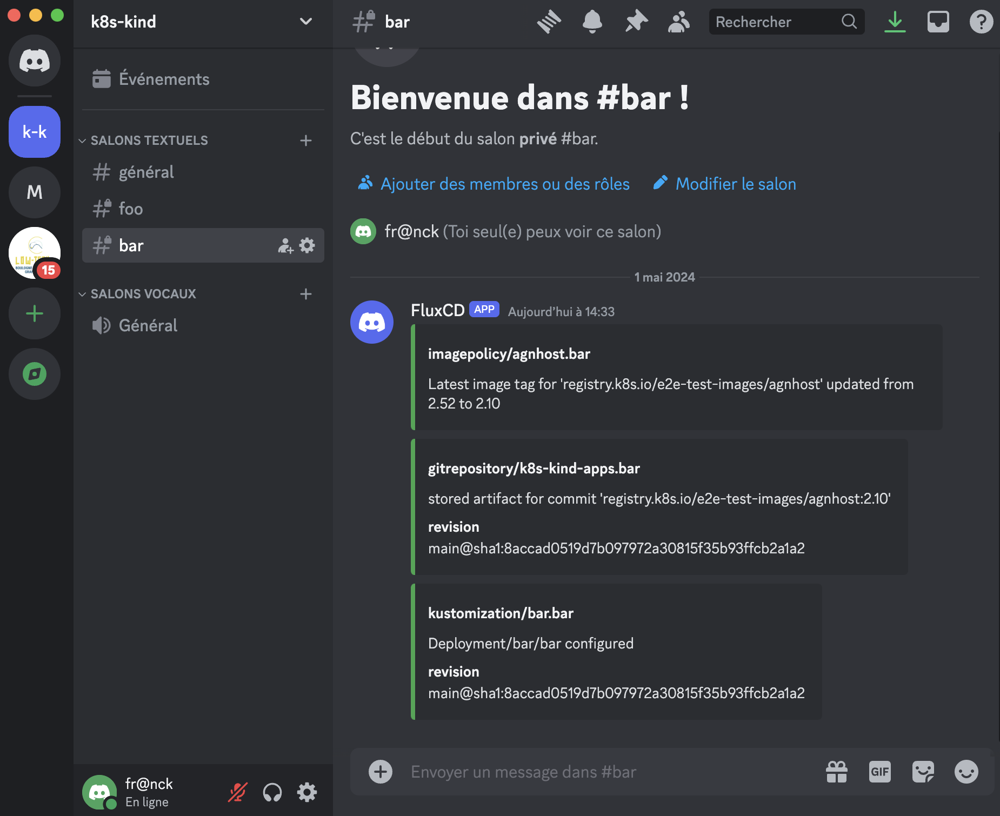
Rollback
Le test est concluant, revenons à la situation initiale où FluxCD s'assure de déployer la version la plus récente de l'image Docker.
export LOCAL_GITHUB_REPOS="${HOME}/code/github"
cd ${LOCAL_GITHUB_REPOS}/k8s-kind-fluxcd
gsed -i 's/order: desc/order: asc/' apps/foo/agnhost.imagepolicy.yaml
gsed -i 's/order: desc/order: asc/' apps/bar/agnhost.imagepolicy.yaml
git add .
git commit -m "test: rollback to normal."
git push
flux reconcile kustomization flux-system --with-source
Discord nous informe directement des modifications apportées à nos applications :
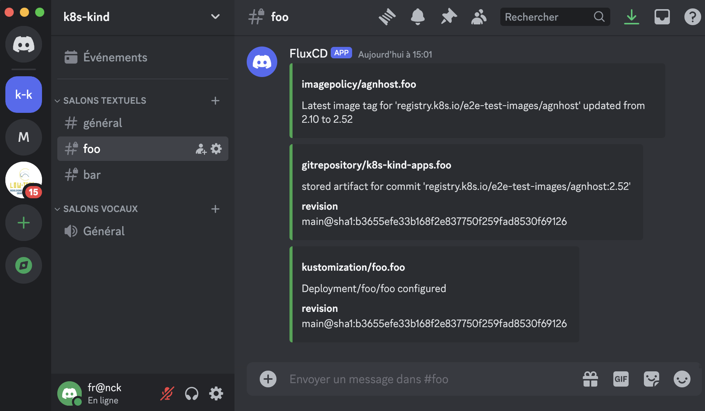
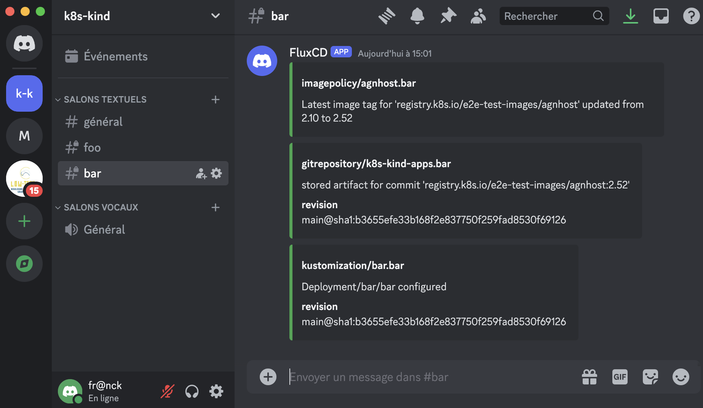
Juste avant de pousser les modifications sur notre dépôt GitHub et de forcer la réconciliation Flux, nous avions exécuté la commande suivante dans un terminal pour surveiller le cycle de vie des pods concernés :
NAMESPACE NAME READY STATUS RESTARTS AGE
bar bar-5f6dc76fcd-xrtk2 1/1 Running 0 25m
foo foo-774bffc7f5-r7q6g 1/1 Running 0 25m
foo foo-6b7d6f775c-fhtdj 0/1 Pending 0 0s
foo foo-6b7d6f775c-fhtdj 0/1 Pending 0 0s
foo foo-6b7d6f775c-fhtdj 0/1 ContainerCreating 0 0s
foo foo-6b7d6f775c-fhtdj 1/1 Running 0 1s
foo foo-774bffc7f5-r7q6g 1/1 Terminating 0 27m
foo foo-774bffc7f5-r7q6g 0/1 Terminating 0 27m
foo foo-774bffc7f5-r7q6g 0/1 Terminating 0 27m
foo foo-774bffc7f5-r7q6g 0/1 Terminating 0 27m
foo foo-774bffc7f5-r7q6g 0/1 Terminating 0 27m
bar bar-76848b7788-zc6r2 0/1 Pending 0 0s
bar bar-76848b7788-zc6r2 0/1 Pending 0 0s
bar bar-76848b7788-zc6r2 0/1 ContainerCreating 0 0s
bar bar-76848b7788-zc6r2 1/1 Running 0 1s
bar bar-5f6dc76fcd-xrtk2 1/1 Terminating 0 27m
bar bar-5f6dc76fcd-xrtk2 0/1 Terminating 0 27m
bar bar-5f6dc76fcd-xrtk2 0/1 Terminating 0 27m
bar bar-5f6dc76fcd-xrtk2 0/1 Terminating 0 27m
bar bar-5f6dc76fcd-xrtk2 0/1 Terminating 0 27m
Nous constatons que pour 'foo' comme pour 'bar', un nouveau pod est créé et une fois opérationnel, le pod qu'il remplace est supprimé.
Le version des images correspond à nouveau la plus récente des versions proposées :
Note
Il semblerait bien que pendant que nous réalisions nos tests de notifications Discord, la version 2.52 de l'image agnhost a été publiée.
Vérifions à nouveau la liste des versions proposées par le dépôt des images 'agnhost' :
Effectivement, nous voyons bien la version 2.52 apparaître désormais
TODO
- Faire le schéma en mermaid avec les imageupdateautomations, imagepolicies, imagerepositories, gitrepositories etc